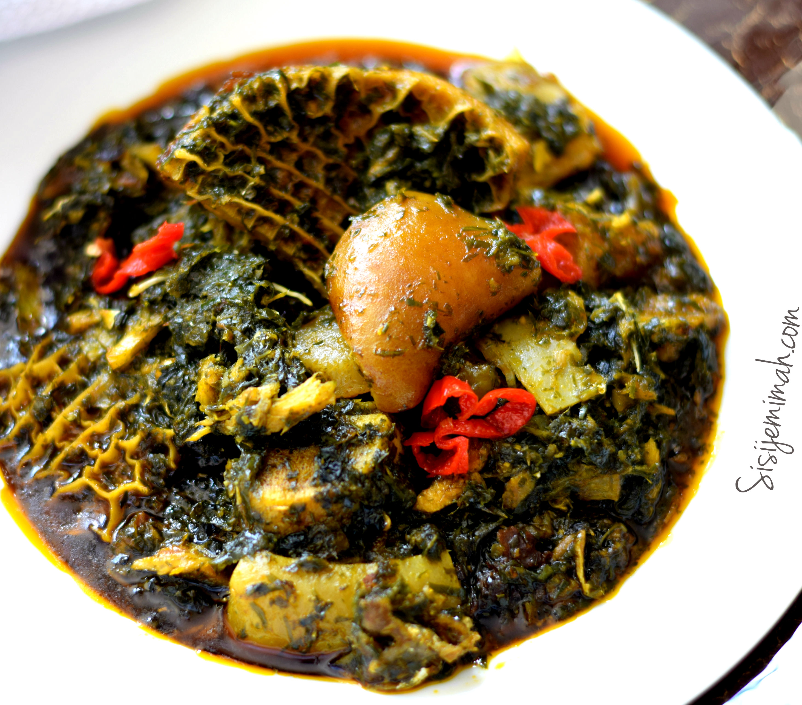

The Nigerian Afang Soup, like the Edikang Ikong soup, is native to the Efiks, people of Akwa Ibom and Cross River states of Nigeria but enjoyed by all Nigerians. It is also very nutritious as the soup consists mainly of vegetables. Afang Soup is prepared with a generous quantity of Water leaves and the wild herbal Okazi leaves.